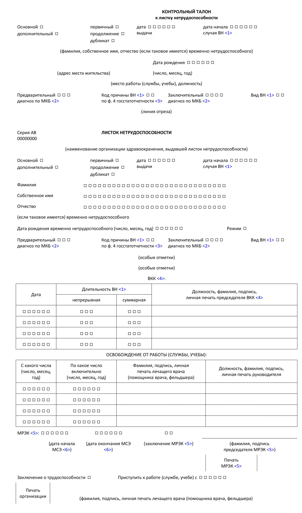

Рассмотрим порядок оформления лицевой стороны листка нетрудоспособности с учетом изменений, внесенных постановлением № 1/1.
Лицевая сторона листка нетрудоспособности оформляется организацией здравоохранения, а в случаях необходимости подтверждения периода фактического пребывания в санаторно-курортной организации или центре медико-социальной реабилитации также указанными организациями.
При оформлении листка нетрудоспособности записи производятся на русском или белорусском языке, разборчиво и четко фиолетовыми, синими или черными чернилами от руки и (или) с применением компьютерной техники. При внесении цифровых символов используются арабские цифры.
Для удостоверения в листке нетрудоспособности записей используются оттиски печатей:
- личной печати;
- печати организации здравоохранения «Для листков нетрудоспособности и справок»;
- печати медико-реабилитационной экспертной комиссии (далее – МРЭК);
- печатей организации здравоохранения, проводившей спелеолечение в стационаре, Государственного учреждения здравоохранения «Витебский областной центр медицинской реабилитации для инвалидов и ветеранов боевых действий на территории других государств» (далее – Центр), санаторно-курортной организации, центра медицинской или медико-социальной реабилитации - для заверения периода фактического пребывания пациентов (лиц, осуществляющих уход) в указанных организациях.
Оттиск печатей должен быть четким и легко читаемым. Оттиск личной печати ставится:
- лечащим врачом - в отведенных для него на листке нетрудоспособности местах на его подпись в случаях:
- выдачи и закрытия листка нетрудоспособности;
- продления листка нетрудоспособности другим лечащим врачом – на его первую подпись;
- при внесении соответствующей информации в позицию листка нетрудоспособности «особые отметки»;
- на исправления.
При отсутствии у лечащего врача (помощника врача, фельдшера) личной печати его подпись заверяется печатью врача-руководителя (заведующего отделением, председателя врачебно-консультационной комиссии (далее – ВКК), руководителя организации здравоохранения, его заместителя).
- врачом-руководителем - однократно в графе «Должность, фамилия, подпись, личная печать руководителя» позиции листка нетрудоспособности «Освобождение от работы (службы, учебы)»:
- при продлении листка нетрудоспособности на срок, превышающий 10 дней, при оказании пациенту медицинской помощи в амбулаторных условиях;
- при выдаче листка нетрудоспособности в стационаре;
- при выдаче листка нетрудоспособности как продолжение ранее выданного листка нетрудоспособности.
- врачом-председателем ВКК - однократно на его первую подпись в графе «Должность, фамилия, подпись, личная печать председателя ВКК» позиции листка нетрудоспособности «ВКК».
- оттиск печати организации здравоохранения «Для листков нетрудоспособности и справок» ставится:
- при закрытии листка нетрудоспособности – в левом нижнем углу бланка листка нетрудоспособности;
- на исправления.
- оттиск печати МРЭК - ставится после завершения медико-социальной экспертизы (далее МСЭ) пациента в МРЭК в правом нижнем углу листка нетрудоспособности, а также в позиции листка нетрудоспособности «особые отметки» в случае нарушения пациентом режима (неявки в МРЭК).
Внесение исправлений в листок нетрудоспособности.
Вносимые исправления оговариваются на левом поле бланка листка нетрудоспособности. На одном бланке допускается не более двух исправлений, каждое из которых заверяется подписью и печатью лечащего врача и печатью организации здравоохранения «Для листков нетрудоспособности и справок».
Записи, не требующие исправления, зачеркиваются одной чертой, а на левом поле бланка листка нетрудоспособности производится запись «зачеркнутое не читать», ставятся подпись, печать лечащего врача и печать организации здравоохранения «Для листков нетрудоспособности и справок».
Заполнение позиций и граф листка нетрудоспособности.
В разметку позиций и граф листка нетрудоспособности вносится информация (в том числе с использованием цифровых символов) в следующем порядке:
- позиция «Основной/дополнительный»: Листок нетрудоспособности, выданный для представления по основному месту работы, считается основным, остальные – дополнительные. При выдаче основного листка нетрудоспособности указывается цифра 1, дополнительного(ых) – цифра 2 (3 и так далее).
- позиция «первичный/продолжение/дубликат»: Листок нетрудоспособности, выданный первым в течение одного случая временной нетрудоспособности, считается первичным, а последующие, выданные в течение данного случая временной нетрудоспособности, - продолжением первичного. При выдаче первичного листка нетрудоспособности указывается цифра 1, продолжения первичного – цифра 0, дубликата – цифра 2.
Если листок нетрудоспособности, выданный пациенту в связи с общим заболеванием, закрыт, но на следующий день пациент снова признан временно нетрудоспособным, выдается новый листок нетрудоспособности, который оформляется как продолжение ранее выданного листка нетрудоспособности, за исключением случаев:
- производственной травмы;
- последствий производственной травмы;
- профессионального заболевания;
- ухода за больным членом семьи;
- ухода за ребенком в возрасте до 3 лет или ребенком-инвалидом в возрасте до 18 лет в случае болезни матери либо другого лица, фактически осуществляющего уход за ребенком;
- ухода за ребенком-инвалидом в возрасте до 18 лет в случае его санаторно-курортного лечения, медицинской реабилитации.
Листки нетрудоспособности, выданные по одному случаю ухода за больным членом семьи при оказании медицинской помощи в амбулаторных условиях, ухода за ребенком в возрасте до 3 лет (ребенком-инвалидом в возрасте до 18 лет) в случае болезни матери либо другого лица, фактически осуществляющего уход за ребенком, ухода за ребенком-инвалидом в возрасте до 18 лет в случае его санаторно-курортного лечения, медицинской реабилитации, оформляются как продолжение ранее выданного листка нетрудоспособности, независимо от того выдаются они одному или разным лицам, непрерывно или с перерывом.
Если в период временной нетрудоспособности в связи с несчастным случаем на производстве (профессиональным заболеванием) возникает другое заболевание (травма в быту), временная нетрудоспособность по которому продолжается после окончания периода временной нетрудоспособности, обусловленного несчастным случаем на производстве (профессиональным заболеванием), листок нетрудоспособности по поводу несчастного случая на производстве (профессионального заболевания) закрывается с внесением информации в позицию листка нетрудоспособности «особые отметки» - «продолжает болеть в связи с общим заболеванием (травмой в быту)». Новый листок нетрудоспособности оформляется как продолжение ранее выданного с указанием в позиции «Вид ВН» вида временной нетрудоспособности в связи с заболеванием (травмой в быту).
- позиция «дата выдачи»: Указываются число, месяц, год даты выдачи листка нетрудоспособности (первая пара цифр – число, вторая – месяц, третья – год).
- позиция «дата начала случая ВН»: Указываются число, месяц, год даты начала случая временной нетрудоспособности (первая пара цифр – число, вторая – месяц, третья – год).
- позиции «Фамилия», «Собственное имя», «Отчество (если таковое имеется) временно нетрудоспособного»: Заполняются в соответствии с данными документа, удостоверяющего личность пациента, без сокращений.
Если мать или лицо, фактически осуществляющее уход за ребенком в возрасте до 3 лет (ребенком-инвалидом в возрасте до 18 лет), не может продолжить уход за данным ребенком в связи с заболеванием, травмой, родами, уходом за другим ребенком (другим ребенком-инвалидом в возрасте до 18 лет) в период нахождения в стационаре, санаторно-курортной организации, центре медицинской или медико-социальной реабилитации данные позиции на имя другого лица, непосредственно осуществляющего уход за данным ребенком, заполняются со слов матери либо лица, фактически осуществляющего уход за ребенком.
- позиция «Дата рождения (число, месяц, год)»: Указываются число, месяц, год рождения временно нетрудоспособного лица (первая пара цифр – число, вторая – месяц, третья – год).
- позиция «Режим»: Указываются цифры, соответствующие виду режима, предписанного пациенту:
- «1» - амбулаторный при оказании медицинской помощи в амбулаторных условиях;
- «2» - стационарный при стационарном лечении;
- «3» - санаторный при направлении в санаторно-курортную организацию;
- «4» - реабилитационный при направлении в Центр, а также в центр медицинской или медико-социальной реабилитации.
В случае изменения режима отметка «режим изменен» с указанием нового вида и даты его изменения вносится в позицию листка нетрудоспособности «особые отметки».
- позиция «Предварительный диагноз по МКБ»: Указывается код заболевания в соответствии с международной статистической классификацией болезней и проблем, связанных со здоровьем, десятого пересмотра, принятой в 1989 году сорок третьей сессией Всемирной ассамблеи здравоохранения (далее – МКБ).
- позиция «Код причины ВН по ф.4 госстатотчетности»: Указывается код причины временной нетрудоспособности в соответствии с формой государственной статистической отчетности 4-нетрудоспособность (Минздрав) «Отчет о причинах временной нетрудоспособности», утвержденной постановлением Национального статистического комитета Республики Беларусь от 28 октября 2016 г. № 158.
- позиция «Заключительный диагноз по МКБ»: Указывается код заболевания в соответствии с МКБ.
Кодирование диагнозов осуществляется трех-четырехзначным кодом в соответствии с рубриками МКБ с использованием алфавитно-цифровой системы кодирования рубрик.
При выдаче листка нетрудоспособности в связи с проведением санитарно-противоэпидемических мероприятий, уходом за больным членом семьи, ребенком в возрасте до 3 лет (ребенком-инвалидом в возрасте до 18 лет) в случае болезни матери либо другого лица, фактически осуществляющего уход за ребенком, ребенком-инвалидом в возрасте до 18 лет при санаторно-курортном лечении, медицинской реабилитации в центре медицинской или медико-социальной реабилитации, в случае беременности и родов позиции «Предварительный диагноз по МКБ» и «Заключительный диагноз по МКБ» не заполняются.
Позиции «Код причины ВН по ф.4 госстатотчетности» и «Заключительный диагноз по МКБ» заполняются при окончании случая временной нетрудоспособности, если:
- пациент выписан к труду;
- у женщины наступил случай беременности и родов;
- пациенту установлена инвалидность первично при направлении в МРЭК»;
- при переосвидетельствовании инвалида в периоде временной нетрудоспособности, связанной с причиной инвалидности, ему установлена более высокая группа инвалидности либо по результатам освидетельствования в МРЭК он признан нетрудоспособным;
- наступила смерть пациента.
позиция «Вид ВН»: Указываются цифры:
- «01» - в связи с заболеванием общим;
- «02» - в связи с травмой в быту;
- «03» - в связи с уходом за больным членом семьи, в том числе за больным ребенком в возрасте до 14 лет (ребенком-инвалидом в возрасте до 18 лет) (уход за больным членом семьи);
- «04» - в связи с производственной травмой;
- «05» - в связи с заболеванием профессиональным;
- «06» - в связи с последствиями травмы в быту;
- «07» - в связи с последствиями производственной травмы;
- «08»- в связи с уходом за ребенком в возрасте до 3 лет и ребенком-инвалидом в возрасте до 18 лет в случае болезни матери либо другого лица, фактически осуществляющего уход за ребенком (уход за ребенком до 3 лет (ребенком-инвалидом до 18 лет), болезнь матери (госпитализация матери);
- «09» - в связи с беременностью и родами, в том числе наступившими до 30 недель беременности (27 недель беременности – у женщин, постоянно (преимущественно) проживающих и (или) работающих, проходящих службу, обучающихся на территории радиоактивного загрязнения), осложнениями беременности, родов и (или) послеродового периода, а также усыновлением (удочерением), установлением опеки над ребенком в возрасте до 3 месяцев (беременность и роды);
- «10» - в связи с уходом за ребенком-инвалидом в возрасте до 18 лет в случае санаторно-курортного лечения (уход за ребенком-инвалидом до 18 лет, санаторно-курортное лечение);
- «11» - в связи с уходом за ребенком-инвалидом в возрасте до 18 лет в случае медицинской реабилитации в центре медицинской или медико-социальной реабилитации (уход за ребенком-инвалидом до 18 лет, медицинская реабилитация);
- «12» - в связи с протезированием, осуществляемым в рамках оказания медицинской помощи в стационарных условиях протезно-ортопедической организации (протезирование);
- «13» - в связи с протезированием, осуществляемым в рамках оказания медицинской помощи в стационарных условиях протезно-ортопедической организации, связанным с травмой в быту (протезирование, травма в быту);
- «14» - в связи с протезированием, осуществляемым в рамках оказания медицинской помощи в стационарных условиях протезно-ортопедической организации, связанным с производственной травмой (протезирование, производственная травма);
- «15» - в связи с проведением санитарно-противоэпидемических мероприятий;
- «16» - в связи с уходом за ребенком в случае смерти матери в родах (в послеродовом периоде) (уход за ребенком, смерть матери). В данном случае оформляется и выдается справка о временной нетрудоспособности.
В случае установления пациенту при первичной выдаче листка нетрудоспособности вида временной нетрудоспособности «травма в быту» и последующем представлении пациентом акта о несчастном случае на производстве по решению ВКК организации здравоохранения в позицию «Вид ВН» выданного листка нетрудоспособности вносятся исправления, соответствующие виду временной нетрудоспособности «производственная травма».
Позиция «особые отметки», вносится информация:
1. лечащим врачом:
- собственное имя, дата рождения ребенка – в случае ухода за больным ребенком в возрасте до 14 лет (ребенком-инвалидом в возрасте до 18 лет) при оказании ему медицинской помощи в амбулаторных условиях, в стационаре, а также при санаторно-курортном лечении, медицинской реабилитации в центре медицинской или медико-социальной реабилитации;
- собственное имя, дата рождения ребенка, фамилия, инициалы матери (лица, фактически осуществляющего уход) – в случае ухода за ребенком в возрасте до 3 лет (ребенком-инвалидом в возрасте до 18 лет) в случае болезни матери (лица, фактически осуществляющего уход);
- «мальчик (девочка)», дата рождения ребенка – в случае ухода за ребенком в связи со смертью матери в родах (послеродовом периоде). Указывается при выдаче справки о временной нетрудоспособности;
- фамилия, инициалы, дата рождения пациента – в случае ухода за больным членом семьи в возрасте старше 14 лет при оказании ему медицинской помощи в амбулаторных условиях;
- «режим изменен» с указанием нового вида режима и даты его изменения – в случае изменения режима, предписанного пациенту;
- дата травмы - в случае установления одного из видов временной нетрудоспособности в связи с травмой в быту, последствиями травмы в быту, последствиями производственной травмы, в связи с протезированием, осуществляемым в рамках оказания медицинской помощи в стационарных условиях протезно-ортопедической организации, связанным с травмой в быту, протезированием, осуществляемым в рамках оказания медицинской помощи в стационарных условиях протезно-ортопедической организации, связанным с производственной травмой.
2. лечащим врачом с заверением его подписью и личной печатью:
- «заболевание связано с забором органа и (или) ткани» – в случае возникновения временной нетрудоспособности по причине забора органа и (или) ткани у донора;
- «заболевание (травма) связано(а) (не связано(а) с причиной инвалидности» - в случае возникновения временной нетрудоспособности у работающих инвалидов в связи с заболеванием (травмой), последствием травмы или протезированием, в том числе при установлении инвалидности в связи с трудовым увечьем или профессиональным заболеванием;
- «нарушение режима:», вид нарушения («неявка на прием» - в случае неявки на прием к лечащему врачу лица, которому выдан листок нетрудоспособности; «неявка на ВКК» - в случае неявки на заседание ВКК лица, которому выдан листок нетрудоспособности; «уход из стационара» - в случае самовольного ухода из стационара; «выезд за рубеж» - в случае самовольного выезда лица, которому выдан листок нетрудоспособности, за пределы Республики Беларусь в период временной нетрудоспособности; «потребление алкоголя» - в случае потребления алкоголя (потребления наркотических средств, психотропных веществ, их аналогов, токсических или других одурманивающих веществ); «невыполнение назначений» - в случае отказа от диагностики, лечения, госпитализации, взятия анализа на алкоголь и (или) наркотические средства, психотропные вещества, их аналоги, токсические или другие одурманивающие вещества, затрудняющие диагностику заболевания, оценку состояния трудоспособности), дата (период);
- «взят анализ на алкоголь и (или) наркотические средства» - в случае закрытия листка нетрудоспособности до получения результатов анализа на алкоголь и (или) наркотические средства, психотропные вещества, их аналоги, токсические или другие одурманивающие вещества. В зависимости от результатов указанного анализа в данную позицию листка нетрудоспособности впоследствии вносится одна из следующих записей: «отсутствует алкогольное и (или) наркотическое опьянение»; «алкогольное и (или) наркотическое опьянение»;
- «продолжает болеть в связи с общим заболеванием (травмой в быту)» - в случае продолжения временной нетрудоспособности в связи с общим заболеванием (травмой в быту) после окончания периода временной нетрудоспособности, обусловленного несчастным случаем на производстве или профессиональным заболеванием;
- «алкогольное и (или) наркотическое опьянение» - при установлении у пациента факта алкогольного опьянения, состояния, вызванного потреблением наркотических средств, психотропных веществ, их аналогов, токсических или других одурманивающих веществ, в случае первичного обращения за медицинской помощью по поводу травмы;
- «заболевание связано с потреблением алкоголя и (или) наркотических средств» - в случае алкогольной комы (комы, вызванной потреблением наркотических средств, психотропных веществ, их аналогов, токсических или других одурманивающих веществ) или лечения хронического неосложненного алкоголизма (наркомании, токсикомании).
Если листок нетрудоспособности, выданный пациенту с отметкой «алкогольное и (или) наркотическое опьянение», закрыт, но, не приступив к работе, пациент снова признан временно нетрудоспособным в связи с другим заболеванием (травмой), новый листок нетрудоспособности ему выдается как продолжение ранее выданного листка нетрудоспособности с внесением записи в позицию листка нетрудоспособности «особые отметки»: «заболевание (травма) не связано(а) с потреблением алкоголя и (или) наркотических средств».
3. председателем ВКК:
- «разрешен выезд» - при направлении пациента за пределы Республики Беларусь для получения медицинской помощи в организации здравоохранения другого государства;
- «направлен в МРЭК», дата – в случае направления пациента в МРЭК. Одновременно листок нетрудоспособности продлевается по решению ВКК по дату регистрации в МРЭК направления на МСЭ;
- «осложненные роды», дата – в случае возникновения у женщины осложнений беременности, родов и послеродового периода, при которых выдается листок нетрудоспособности сроком на 14 календарных дней как продолжение листка нетрудоспособности, выданного в связи с беременностью и родами согласно приложению к постановлению Министерства здравоохранения Республики Беларусь от 7 декабря 2011 г. № 119 «Об установлении перечня осложнений беременности, родов и послеродового периода, при которых выдается листок нетрудоспособности сроком на 14 календарных дней как продолжение листка нетрудоспособности, выданного в связи с беременностью и родами» (далее – приложение № 119);
- «взамен Л/Н № __» - в случае выдачи дубликата листка нетрудоспособности взамен утерянного.
При выдаче дубликата листка нетрудоспособности взамен утерянного в позиции листка нетрудоспособности «особые отметки» производится запись «взамен Л/Н № ___», а в позиции «ВКК» указывается дата решения ВКК, фамилия председателя ВКК, ставятся его подпись, оттиск личной печати. В позиции «Освобождение от работы (службы, учебы)» одной строкой указываются период временной нетрудоспособности (за исключением периода (периодов) нарушения режима), фамилия лечащего врача (помощника врача, фельдшера), ставятся его подпись и оттиск личной печати, а также указываются должность, фамилия заведующего структурным подразделением организации здравоохранения, или руководителя (заместителя руководителя) организации здравоохранения, или председателя ВКК, ставятся его подпись и оттиск личной печати.
Так же осуществляется оформление листка нетрудоспособности и при выдаче взамен испорченного. При этом запись «взамен Л/Н № ___» не производится.
4. председателем МРЭК:
- «неявка в МРЭК» - в случае неявки пациента в назначенный день в МРЭК.
5. врачом-руководителем, заверяющим подпись медицинского работника, не имеющего личной печати:
- «подпись (фамилия медицинского работника, чья подпись заверяется) заверяю» - при необходимости заверения подписи медицинского работника, не имеющего личной печати, выдавшего (продлившего) листок нетрудоспособности.
- организацией здравоохранения, проводившей спелеолечение в стационаре, Центром, санаторно-курортной организацией, центром медицинской или медико-социальной реабилитации: Указываются наименование организации, период – при внесении информации о периоде фактического пребывания пациента и (или) лица, осуществляющего уход за ребенком, которые заверяется подписью руководителя (заместителя руководителя) и печатью указанной организации.
- руководителем (заместителем руководителя) организации здравоохранения, председателем ВКК, лицом, определенным приказом руководителя организации здравоохранения, с заверением его подписью и личной печатью: «разрешена выдача ЛН, должность, фамилия, инициалы» - при выдаче листка нетрудоспособности лицу, проживающему вне зоны обслуживания данной организации здравоохранения.
Право выдачи листков нетрудоспособности без внесения записи о разрешении на их выдачу имеют государственные организации здравоохранения:
- республиканские – лицам, проживающим на территории Республики Беларусь;
- областные - лицам, проживающим на территории данной области;
- районные - лицам, проживающим на территории данного района;
- межрайонные - лицам, проживающим на территории соответствующих административно-территориальных единиц;
- ведомственные – работникам соответствующих государственных органов или организаций, а также лицам, закрепленным в установленном порядке для получения медицинской помощи в указанных организациях здравоохранения.
позиция «ВКК», указываются:
- дата освидетельствования пациента ВКК;
- длительность случая временной нетрудоспособности в календарных днях (непрерывная, суммарная). Если длительность временной нетрудоспособности составляет в пределах от 1 до 9 дней, в первых двух ячейках указываются два нуля, в пределах от 10 до 99 дней, - в первой ячейке указывается ноль;
- должность, фамилия, подпись и личная печать председателя ВКК.
Согласно Инструкции о порядке проведения экспертизы временной нетрудоспособности, утвержденной постановлением Министерства здравоохранения Республики Беларусь от 24 декабря 2014 г. № 104 (далее – Инструкция № 104) при обращении пациента (лица, осуществляющего уход) в организацию здравоохранения по месту жительства экспертиза временной нетрудоспособности ВКК проводится в случаях осуществления планово-контрольных заседаний ВКК для решения вопроса о продлении:
- непрерывного срока временной нетрудоспособности пациента при оказании ему медицинской помощи в амбулаторных или стационарных условиях в связи с одним или разными заболеваниями (травмами), в связи с уходом за ребенком в возрасте до 3 лет (ребенком-инвалидом в возрасте до 18 лет) в случае болезни матери либо другого лица, фактически осуществляющего уход за ребенком, в сроках 30, 60, 90 и 105 календарных дней, а при заболевании туберкулезом – 60, 90, 120, 150, и 165 календарных дней от начала случая временной нетрудоспособности или от даты начала МСЭ в случае принятия решения МРЭК о продлении лечения пациента;
- суммарного срока временной нетрудоспособности пациента при повторных случаях одного или этиологически связанных (родственных) заболеваний, в связи с уходом за ребенком в возрасте до 3 лет (ребенком-инвалидом в возрасте до 18 лет) в случае болезни матери либо другого лица, фактически осуществляющего уход за ребенком, в сроках свыше 120 и 135 календарных дней, а при заболевании туберкулезом – 180, 210, и 225 календарных дней за последние 12 месяцев или от даты начала МСЭ в случае принятия решения МРЭК о продлении лечения;
- срока временной нетрудоспособности в случае необходимости ухода за больным ребенком в возрасте до 14 лет, ребенком-инвалидом в возрасте до 18 лет в сроках свыше 30, 60, 90, 120 и т.д. календарных дней от начала случая указанного ухода;
- определения необходимости ухода за больным членом семьи, достигшим 14-летнего возраста, в том числе инвалидом II, III группы, при оказании ему медицинской помощи в амбулаторных условиях с определением срока временной нетрудоспособности до 7 календарных дней включительно по одному случаю острого заболевания (травмы), обострения хронического заболевания.)
позиция «Освобождение от работы (службы, учебы)»: Указываются:
- в графе «С какого числа (число, месяц, год)» - дата, с которой пациент освобожден от работы (службы, учебы) (первая пара цифр – число, вторая – месяц, третья – год);
- в графе «По какое число включительно (число, месяц, год)» - дата, по которую пациент освобожден от работы (службы, учебы) (первая пара цифр – число, вторая – месяц, третья – год). Если листок нетрудоспособности выдается (продлевается) на один день, в данной графе указывается та же дата, что и в первой графе;
- в графе «Фамилия, подпись, личная печать лечащего врача (помощника врача, фельдшера)» - фамилия лечащего врача (помощника врача, фельдшера), которая заверяется подписью и личной печатью;
- в графе «Должность, фамилия, подпись, личная печать руководителя» - фамилия руководителя, ставятся его подпись и печать (печать ставится однократно).
При стационарном лечении в позиции листка нетрудоспособности «Освобождение от работы (службы, учебы)» отдельными строками указываются:
- весь период временной нетрудоспособности со дня госпитализации по день выписки, но не более сроков, определенных пунктом 18 Инструкции;
- период временной нетрудоспособности в случае, если к моменту выписки пациента из стационара его трудоспособность не восстановилась;
- день для проезда пациента к месту жительства (пребывания) в связи с удаленностью организации здравоохранения.
Согласно Инструкции № 104 при обращении пациента (лица, осуществляющего уход) в организацию здравоохранения по месту жительства экспертиза временной нетрудоспособности проводится:
- лечащим врачом единолично при оказании пациенту медицинской помощи в амбулаторных условиях и первичном установлении временной нетрудоспособности с определением срока временной нетрудоспособности не более чем на 10 календарных дней в случаях:
- заболевания (травмы);
- ухода за больным ребенком в возрасте до 14 лет - в отношении матери (мачехи), отца (отчима), усыновителя (удочерителя), опекуна (попечителя) указанного ребенка;
- ухода за ребенком в возрасте до 3 лет (ребенком-инвалидом в возрасте до 18 лет) в случае болезни матери либо другого лица, фактически осуществляющего уход за ребенком.
В случае если лечащий врач является врачом общей практики, врачом-специалистом амбулатории врача общей практики (больничной организации здравоохранения, находящейся в сельской местности, врачебной амбулатории) и работает один, экспертиза временной нетрудоспособности осуществляется им самостоятельно с определением срока временной нетрудоспособности не более чем на 14 календарных дней.
лечащим врачом совместно с заведующим отделением или руководителем (заместителем руководителя) организации здравоохранения или председателем ВКК:
- при оказании медицинской помощи в амбулаторных условиях в случаях:
- первичного установления временной нетрудоспособности в случае ухода за больным ребенком в возрасте до 14 лет - в отношении лица, не являющегося матерью (мачехой), отцом (отчимом), усыновителем (удочерителем), опекуном (попечителем) указанного ребенка;
- продления срока временной нетрудоспособности свыше 10 календарных дней от даты начала случая временной нетрудоспособности при заболевании (травме), уходе за больным ребенком в возрасте до 14 лет, уходе за ребенком в возрасте до 3 лет (ребенком-инвалидом в возрасте до 18 лет) в случае болезни матери либо другого лица, фактически осуществляющего уход за ребенком (при выдаче листка нетрудоспособности врачом общей практики, врачом-специалистом амбулатории врача общей практики (больничной организации здравоохранения, находящейся в сельской местности, врачебной амбулатории) если он работает один – свыше 14 календарных дней);
- продления срока временной нетрудоспособности после проведения МСЭ в случае принятия решения МРЭК о продлении временной нетрудоспособности;
- обращения женщины в сроке 30 недель беременности (27 недель беременности у женщин, постоянно (преимущественно) проживающих и (или) работающих, проходящих службу, обучающихся на территории радиоактивного загрязнения);
- при выписке из больничной организации здравоохранения:
- пациента - с определением срока временной нетрудоспособности на весь период оказания медицинской помощи в стационарных условиях. Если трудоспособность пациента в день выписки не восстановилась, срок временной нетрудоспособности может быть продлен: не более чем на 3 календарных дня и не более чем на 10 календарных дней при отсутствии медицинских показаний к более частым медицинским осмотрам. При признании пациента в день выписки трудоспособным – на 1 календарный день для проезда к месту жительства (пребывания) в связи с удаленностью организации здравоохранения;
- лица, осуществляющего уход за ребенком в возрасте до 3 лет (ребенком-инвалидом в возрасте до 18 лет) в случае болезни матери либо другого лица, фактически осуществляющего уход за ребенком, - с определением срока временной нетрудоспособности на весь период оказания медицинской помощи в стационарных условиях (госпитализации для осуществления ухода за другим больным ребенком, другим ребенком-инвалидом в возрасте до 18 лет) матери либо другого лица, фактически осуществляющему уход за ребенком;
- лица, осуществляющего уход за больным ребенком в возрасте до 5 лет, - с определением срока временной нетрудоспособности на весь период оказания ребенку медицинской помощи в стационарных условиях;
- лица, осуществляющего уход за больным ребенком в возрасте от 5 до 14 лет (ребенком-инвалидом в возрасте до 18 лет), - с определением срока временной нетрудоспособности на период нуждаемости данного ребенка в дополнительном уходе;
- пациента в случае его смерти в периоде временной нетрудоспособности - с определением срока временной нетрудоспособности за весь период оказания медицинской помощи в стационарных условиях.)
Срок временной нетрудоспособности (с выдачей листка нетрудоспособности) определяется:
- при заболевании и травме: - со дня установления временной нетрудоспособности на весь ее период (до дня восстановления трудоспособности или по день установления инвалидности либо смерти пациента), но не более чем на 120 календарных дней непрерывно от начала случая временной нетрудоспособности (от даты начала МСЭ в случае принятия решения МРЭК о продлении временной нетрудоспособности) по одному или разным заболеваниям (травмам) либо не более чем на 150 календарных дней с перерывами за последние 12 месяцев при повторных случаях временной нетрудоспособности в связи с одним либо этиологически связанными (родственными) заболеваниями (травмами), включая протезирование в стационарных условиях, а при заболевании туберкулезом – не более чем на 180 календарных дней непрерывно или не более чем на 240 календарных дней с перерывами за последние 12 месяцев.
- по уходу за больным членом семьи (со дня, когда лицо, осуществляющее уход, нуждается в освобождении от работы для осуществления ухода):
- при оказании медицинской помощи в амбулаторных условиях:
- по уходу за больным ребенком в возрасте до 14 лет – на период нуждаемости в уходе, но не более чем на 14 календарных дней по одному случаю заболевания или травмы (непрерывно либо с перерывом);
- по уходу за больным членом семьи, достигшим 14-летнего возраста – на период нуждаемости в уходе, но не более чем на 7 календарных дней.
- при оказании медицинской помощи в стационарных условиях:
- по уходу за больным ребенком в возрасте до 5 лет – на период оказания медицинской помощи;
- по уходу за больным ребенком в возрасте от 5 до 14 лет (ребенком-инвалидом в возрасте до 18 лет) – на период, в течение которого ребенок по заключению лечащего врача нуждался в дополнительном уходе.
- при оказании медицинской помощи в амбулаторных условиях:
- по уходу за ребенком в возрасте до 3 лет (ребенком-инвалидом в возрасте до 18 лет) в случае болезни матери либо другого лица, фактически осуществляющего уход за ребенком: - на период, когда мать либо другое лицо, фактически осуществляющее уход за ребенком, не может осуществлять уход в связи с заболеванием (травмой), родами или госпитализацией для ухода за другим ребенком, осуществлением ухода за ребенком-инвалидом в возрасте до 18 лет в случае его санаторно-курортного лечения, медицинской реабилитации в центре медицинской или медико-социальной реабилитации.
- по уходу за ребенком-инвалидом в возрасте до 18 лет в случае его санаторно-курортного лечения, медицинской реабилитации в центре медицинской или медико-социальной реабилитации: - на период фактического пребывания пациента в санаторно-курортной организации, центре медицинской или медико-социальной реабилитации, а также на время проезда от места жительства (пребывания) к месту указанной организации и обратно, но не более чем на один срок санаторно-курортного лечения, медицинской реабилитации в календарном году.
- в связи с протезированием, осуществляемым в рамках оказания медицинской помощи в стационарных условиях протезно-ортопедической организации: - на весь период пребывания в ней, время проезда к месту протезирования и обратно.
- в связи с проведением санитарно-противоэпидемических мероприятий: - на весь период отстранения от работы в связи с проведением санитарно-противоэпидемических мероприятий для физических лиц, имеющих инфекционные заболевания, физических лиц, контактировавших с физическими лицами, имеющими инфекционные заболевания, а также физических лиц с подозрением на инфекционные заболевания, которые в связи с особенностями выполняемой ими работы или производства, в котором они заняты, могут быть источником инфекционных заболеваний.
Лицам, осуществляющим уход за ребенком в возрасте до 10 лет, посещающим учреждение дошкольного или общего среднего образования, на период проведения в указанном учреждении санитарно-противоэпидемических мероприятий выдается справка о временной нетрудоспособности.
- при беременности и родах: - необходимость временного освобождения женщины от работы (службы, учебы) устанавливается в сроке беременности 30 недель (27 недель беременности у женщин, постоянно (преимущественно) проживающих и (или) работающих, проходящих службу, обучающихся на территории радиоактивного загрязнения), и определяется единовременно на 126 календарных дней (у женщин, постоянно (преимущественно) проживающих и (или) работающих, проходящих службу, обучающихся на территории радиоактивного загрязнения, - на 146 календарных дней).
В случае возникновения у женщины осложнений беременности, родов и послеродового периода, при которых выдается листок нетрудоспособности сроком на 14 календарных дней как продолжение листка нетрудоспособности, выданного в связи с беременностью и родами согласно приложению № 119, срок временной нетрудоспособности увеличивается на 14 календарных дней.
В случае наступления родов до 30 недель беременности (до 27 недель у женщин, постоянно (преимущественно) проживающих и (или) работающих, проходящих службу, обучающихся на территории радиоактивного загрязнения) срок временного освобождения от работы (службы, учебы) определяется единовременно с даты родов на 140 календарных дней (женщин, постоянно (преимущественно) проживающих и (или) работающих, проходящих службу, обучающихся на территории радиоактивного загрязнения, - на 160 календарных дней), а в случае рождения мертвого ребенка – на 70 календарных дней.
- в случаях усыновления (удочерения), установления опеки над ребенком в возрасте до 3 месяцев: - срок временной нетрудоспособности определяется единовременно на 70 календарных дней со дня усыновления (удочерения), установления указанной опеки.
- позиция «МРЭК»:
- в позиции «дата начала МСЭ» - указываются число, месяц, год даты начала МСЭ (первая пара цифр – число, вторая – месяц, третья - год);
- в позиции «дата окончания МСЭ» - указываются число, месяц, год даты окончания МСЭ (первая пара цифр – число, вторая – месяц, третья год);
- в позиции «заключение МРЭК» указывается:
- «10» - если при первичном освидетельствовании инвалидность не установлена;
- «11» - если при первичном освидетельствовании установлена инвалидность I группы;
- «12» - если при первичном освидетельствовании установлена инвалидность II группы;
- «13» - если при первичном освидетельствовании установлена инвалидность III группы;
- «14» - если при первичном освидетельствовании принято решение о продлении временной нетрудоспособности;
- «20» - если при переосвидетельствовании инвалидность не установлена;
- «21» - если при переосвидетельствовании установлена инвалидность I группы;
- «22» - если при переосвидетельствовании установлена инвалидность II группы;
- «23» - если при переосвидетельствовании установлена инвалидность III группы;
- «24» - если при переосвидетельствовании принято повторное решение о продлении временной нетрудоспособности.
- позиция «фамилия, подпись председателя МРЭК»: - указывается фамилия, подпись председателя МРЭК, проводившей освидетельствование пациента.
- позиция «Печать МРЭК»: - проставляется оттиск печати МРЭК, в которой проводилась МСЭ пациента.
- позиция «Заключение о трудоспособности»: Указывается:
- «0» - в случае признания пациента временно нетрудоспособным (продолжает болеть);
- «1» - в случае признания пациента трудоспособным, а также в случае закрытия листка нетрудоспособности, выданного в связи с уходом за больным членом семьи;
- «2» - в случае признания пациента нетрудоспособным и установления инвалидности;
- «3» - в случае установления пациенту инвалидности с вынесением трудовых рекомендаций;
- «4» - в случае смерти пациента.
Если в течение одного непрерывного случая временной нетрудоспособности пациенту выдается несколько листков нетрудоспособности, в позиции «Заключение о трудоспособности» каждого из них (кроме последнего) указывается «0». В последующих листках нетрудоспособности в позиции «особые отметки» указывается «продолжение ЛН №___» с указанием номера предыдущего листка нетрудоспособности. Начало случая временной нетрудоспособности кодируется в соответствии с первичным листком нетрудоспособности.
Если пациент умер в период временной нетрудоспособности, в графе «По какое число включительно (число, месяц, год)» позиции листка нетрудоспособности «Освобождение от работы (службы, учебы)» указывается дата его смерти. При необходимости в указанной позиции производится исправление.
- позиция «Приступить к работе (службе, учебе) с»: - указывается дата, с которой пациент признан трудоспособным (первая пара цифр – число, вторая – месяц, третья год).
При признании пациента временно нетрудоспособным, нетрудоспособным с установлением инвалидности, а так же в случае его смерти данная позиция не заполняется.
- позиция «фамилия, подпись, личная печать лечащего врача (помощника врача, фельдшера)»: - указывается фамилия, подпись, лечащего врача (помощника врача, фельдшера), закрывшего листок нетрудоспособности.
- позиция «Печать организации»: - проставляется оттиск печати организации здравоохранения, закрывшей листок нетрудоспособности.
